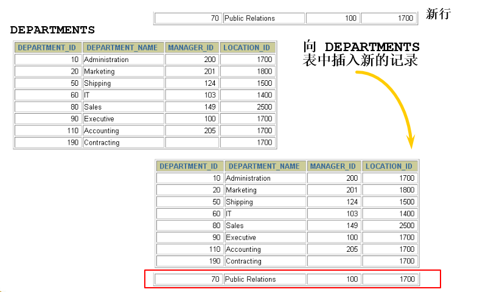

mysql基础篇-第11章-数据处理之增删改
第11章_数据处理之增删改
讲师：尚硅谷-宋红康（江湖人称：康师傅）
1. 插入数据
1.1 实际问题
解决方式：使用 INSERT 语句向表中插入数据。
1.2 方式1：VALUES的方式添加
使用这种语法一次只能向表中插入一条数据。
情况1：为表的所有字段按默认顺序插入数据
1 | INSERT INTO 表名 |
值列表中需要为表的每一个字段指定值，并且值的顺序必须和数据表中字段定义时的顺序相同。
举例：
1 | INSERT INTO departments |
1 | INSERT INTO departments |
情况2：为表的指定字段插入数据
1 | INSERT INTO 表名(column1 [, column2, …, columnn]) |
为表的指定字段插入数据，就是在INSERT语句中只向部分字段中插入值，而其他字段的值为表定义时的默认值。
在 INSERT 子句中随意列出列名，但是一旦列出，VALUES中要插入的value1,….valuen需要与column1,…columnn列一一对应。如果类型不同，将无法插入，并且MySQL会产生错误。
举例：
1 | INSERT INTO departments(department_id, department_name) |
情况3：同时插入多条记录
INSERT语句可以同时向数据表中插入多条记录，插入时指定多个值列表，每个值列表之间用逗号分隔开，基本语法格式如下：
1 | INSERT INTO table_name |
或者
1 | INSERT INTO table_name(column1 [, column2, …, columnn]) |
举例：
1 | mysql> INSERT INTO emp(emp_id,emp_name) |
使用INSERT同时插入多条记录时，MySQL会返回一些在执行单行插入时没有的额外信息，这些信息的含义如下：
● Records：表明插入的记录条数。
● Duplicates：表明插入时被忽略的记录，原因可能是这些记录包含了重复的主键值。
● Warnings：表明有问题的数据值，例如发生数据类型转换。
一个同时插入多行记录的INSERT语句等同于多个单行插入的INSERT语句，但是多行的INSERT语句在处理过程中
效率更高。因为MySQL执行单条INSERT语句插入多行数据比使用多条INSERT语句快，所以在插入多条记录时最好选择使用单条INSERT语句的方式插入。
小结：
VALUES也可以写成VALUE，但是VALUES是标准写法。字符和日期型数据应包含在单引号中。
1.3 方式2：将查询结果插入到表中
INSERT还可以将SELECT语句查询的结果插入到表中，此时不需要把每一条记录的值一个一个输入，只需要使用一条INSERT语句和一条SELECT语句组成的组合语句即可快速地从一个或多个表中向一个表中插入多行。
基本语法格式如下：
1 | INSERT INTO 目标表名 |
- 在 INSERT 语句中加入子查询。
- 不必书写 VALUES 子句。
- 子查询中的值列表应与 INSERT 子句中的列名对应。
举例：
1 | INSERT INTO emp2 |
1 | INSERT INTO sales_reps(id, name, salary, commission_pct) |
2. 更新数据

- 使用 UPDATE 语句更新数据。语法如下：
1 | UPDATE table_name |
可以一次更新多条数据。
如果需要回滚数据，需要保证在DML前，进行设置：SET AUTOCOMMIT = FALSE;
- 使用 WHERE 子句指定需要更新的数据。
1 | UPDATE employees |
- 如果省略 WHERE 子句，则表中的所有数据都将被更新。
1 | UPDATE copy_emp |
- 更新中的数据完整性错误
1 | UPDATE employees |

说明：不存在 55 号部门
3. 删除数据

- 使用 DELETE 语句从表中删除数据

1 | DELETE FROM table_name [WHERE <condition>]; |
table_name指定要执行删除操作的表；“[WHERE
- 使用 WHERE 子句删除指定的记录。
1 | DELETE FROM departments |
- 如果省略 WHERE 子句，则表中的全部数据将被删除
1 | DELETE FROM copy_emp; |
- 删除中的数据完整性错误
1 | DELETE FROM departments |

说明：You cannot delete a row that contains a primary key that is used as a foreign key in another table.
4. MySQL8新特性：计算列
什么叫计算列呢？简单来说就是某一列的值是通过别的列计算得来的。例如，a列值为1、b列值为2，c列不需要手动插入，定义a+b的结果为c的值，那么c就是计算列，是通过别的列计算得来的。
在MySQL 8.0中，CREATE TABLE 和 ALTER TABLE 中都支持增加计算列。下面以CREATE TABLE为例进行讲解。
举例：定义数据表tb1，然后定义字段id、字段a、字段b和字段c，其中字段c为计算列，用于计算a+b的值。
首先创建测试表tb1，语句如下：
1 | CREATE TABLE tb1( |
插入演示数据，语句如下：
1 | INSERT INTO tb1(a,b) VALUES (100,200); |
查询数据表tb1中的数据，结果如下：
1 | mysql> SELECT * FROM tb1; |
更新数据中的数据，语句如下：
1 | mysql> UPDATE tb1 SET a = 500; |
5. 综合案例
1 | # 1、创建数据库test01_library |
| 字段名 | 字段说明 | 数据类型 |
|---|---|---|
| id | 书编号 | INT |
| name | 书名 | VARCHAR(50) |
| authors | 作者 | VARCHAR(100) |
| price | 价格 | FLOAT |
| pubdate | 出版日期 | YEAR |
| note | 说明 | VARCHAR(100) |
| num | 库存 | INT |
1 | # 3、向books表中插入记录 |
| id | name | authors | price | pubdate | note | num |
|---|---|---|---|---|---|---|
| 1 | Tal of AAA | Dickes | 23 | 1995 | novel | 11 |
| 2 | EmmaT | Jane lura | 35 | 1993 | joke | 22 |
| 3 | Story of Jane | Jane Tim | 40 | 2001 | novel | 0 |
| 4 | Lovey Day | George Byron | 20 | 2005 | novel | 30 |
| 5 | Old land | Honore Blade | 30 | 2010 | law | 0 |
| 6 | The Battle | Upton Sara | 30 | 1999 | medicine | 40 |
| 7 | Rose Hood | Richard haggard | 28 | 2008 | cartoon | 28 |
1 | # 4、将小说类型(novel)的书的价格都增加5。 |
1 | # 7、统计书名中包含a字母的书 |
答案：
1 | #1、创建数据库test01_library |
1 | # 7、统计书名中包含a字母的书 |